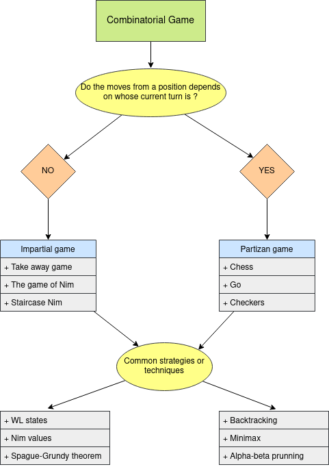

Class 13: Game Theory I
02-24-2020
“Don’t Repeat Yourself”
When we talk about game theory in competitive programming we mean combinational game theory. In combinatorial game theory we study combinatorial games, these are two-person games with perfect information and no change moves, and with a win-or-lose outcome. We can define such games using:
- Set of possible positions
- Initial position
- Set of terminal positions
- Player that start the game
- Function that determines the possible moves from each position
If the function that determines the possible moves from each position is the same for both players, then we have a impartial game, else we have a partizan game. For each type (impartial and partizan) there are different strategies to solve them as we can see in the following diagram:

We will focus in study some of these strategies and techniques.
A simple take-away game
Problem: There is a pile of \(n\) chips and two players (player A and player B). They are alternating turns, in each turn a player removes one, two or three chips from the pile. The player that removes the last chip wins. If player A starts the game and both players play optimally, who will be the winner ?
In order to solve this problem we can use what is called backward induction. This technique consists in analyzing a problem from the end back to the begining.
Let:
- \(L\): losing position for player A
- \(R\): winning position for player A
We can define a function \(f: \mathbb{N \cup \{0\}} \to \{L, R\}\) such that \(f(x)\) indicates what is the result for player A if the game has a pile a \(x\) chips.
From these definitions we have:
- \(f(0) = L\)
- \(f(1) = W\)
- \(f(2) = W\)
- \(f(3) = W\)
- \(f(4) = L\)
- \(f(5) = W\)
- \(f(6) = W\)
- \(f(7) = W\)
- \(f(8) = L\)
- \(f(9) = W\)
- \(f(10) = W\)
- \(f(11) = W\)
- \(f(12) = L\)
That is, if there is no chips, then player \(A\) loses. If there is \(1, 2\) or \(3\) chips, then player \(A\) can take all the chips in a move and win. If there is \(4\) chips no matter how many chips player \(A\) takes, because player \(B\) can end the game in the next turn. If there is \(5, 6\) or \(7\) chips, then player \(A\) can left just \(4\) chips, then no matter how many chips player \(B\) takes in its turn, in the next turn player \(A\) can take all the remaining chips. \(\dots\)
From these we notice that \(f(x) = L\) iff \(L \equiv 0 \bmod 4\). Then, we have solved the problem.
The idea of defining a function that maps some states to \(L, W\) is what is called WL states. Moreover, we can generalize this idea with the following property:
Characteristic property
WL states are defined recursively by the following three statements:
- All terminal positions are \(L\) states.
- From every \(W\) state, there is at least one move to a \(L\) state.
- From every \(L\) state, every move is to a \(W\) state.
We can interpret these statements in this way:
- If I am in a terminal state, then I have no available moves, so I am in a losing state.
- If I can make that the other player starts its turn in a state where he will lose, then I am in a winning state.
- If I am in a state where no matter what I do, in the next turn the other player have a winning strategy, then I am in a losing state.
Now, let’s practice solving UVA 10404 - Bachet’s game.
It is basically a generalized version of ‘A simple take-away game’. The problem is the same, we still have a pile of \(n\) chips, but now the set of available moves (how many chips we can take) is variable.
We can use the characteristic property to solve the problem using backtracking in this way:
#include <bits/stdc++.h>
using namespace std;
int n, m;
vector <int> take;
const int L = 0;
const int W = 1;
int rec (int x) {
if (x == 0) { // terminal state
return L;
}
int result = L; // suppose we are in a losing state
for (int t: take) {
if (t <= x and rec(x - t) == L) {
// if there is a move to a losing state
// then we are in a winning state
result = W;
}
}
return result;
}
int main () {
int n, m;
while (cin >> n >> m) {
take.resize(m);
for (int i = 0; i < m; i++) cin >> take[i];
if (rec(n) == W) cout << "Stan wins" << '\n';
else cout << "Ollie wins" << '\n';
}
return (0);
}The solution is correct, but it takes too much time doing the same computations, so we can memorize some results and improve the solution in this way:
#include <bits/stdc++.h>
using namespace std;
int n, m;
vector <int> take;
vector <int> memo;
const int L = 0;
const int W = 1;
const int UNVISITED = 2;
int rec (int x) {
if (x == 0) { // terminal state
return L;
}
if (memo[x] != UNVISITED) { // we have already compute it
return memo[x];
}
int result = L; // suppose we are in a losing state
for (int t: take) {
if (t <= x and rec(x - t) == L) {
// if there is a move to a losing state
// then we are in a winning state
result = W;
}
}
return memo[x] = result;
}
int main () {
while (cin >> n >> m) {
take.resize(m);
memo.resize(n + 1, UNVISITED);
for (int i = 0; i < m; i++) cin >> take[i];
if (rec(n) == W) cout << "Stan wins" << '\n';
else cout << "Ollie wins" << '\n';
take.clear();
memo.clear();
}
return (0);
}We are now solving each case in \(O(nm)\) which is enough to get Accepted veredict.
The game on Nim
There are \(n\) piles of stones \(x_1, x_2, \dots, x_n\). There are two players (player A and player B) that are alternating turns. In each turn a player selects a pile (only one) and removes at least one chip from it. The winner is the player who removes the last chip. If player A starts the game and both players play optimally, who will be the winner ?
We can play this game in this link.
In process…
In process…
Recommended readings:
You can find the contest here.
The solutions will be uploaded after the contest.